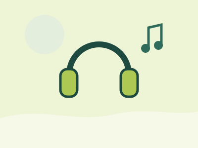

Gentle, affordable dentistry for South Cairns families.
A modern, family-owned practice in Edmonton, caring for children and adults from Bentley Park, Mount Sheridan, Gordonvale and nearby suburbs. You’ll see the same dentist each visit, and we’ll explain your options in plain language before anything goes ahead.

Book today
- Emergency appointments
- Reserved daily
- New patients
- Welcome
- After-hours and weekends
- On request
- Kids dentistry
- Free if eligible
What brings you in today?
Start with what you need, and we’ll point you to the right place.
- I’m in pain or broke a toothToothache, swelling or a broken tooth? We reserve appointments every day for emergencies.Emergency help
- I’m new, or it’s been a whileA thorough check-up and clean, then a printed plan you can take home and think over.Your first visit
- My child needs a check-upCalm, positive visits for kids, with free dentistry for eligible children.Children’s dentistry
- I’m missing a toothImplants, bridges and dentures, explained honestly so you can compare.Replacing teeth
- I’d like a brighter, straighter smileWhitening, porcelain veneers and Invisalign clear aligners.Cosmetic options
- I want to know about costsFees explained before treatment, health fund questions and children’s dental benefits.Costs and cover

A local practice that gets to know you
We’re a family-owned practice on Stokes Street, close to Piccones IGA and the shops and health services of Edmonton.
We believe continuity matters. Seeing the same dentist from one visit to the next means your dentist knows your history, remembers what worries you, and notices changes early.
Whether you need a routine check-up, a filling, a new tooth or help in an emergency, our aim is the same: clear explanations, honest advice and care that goes at your pace.
- dentists on our team
- 4
- treatments under one roof
- 14
- days a week, Monday to Friday
- 5
Dental care for the whole family
From six-monthly check-ups to replacing missing teeth, our dentists provide general, preventive, restorative and cosmetic treatment at one practice. Choose a treatment to read what it involves, what to consider and what to expect.
 PreventiveCheck-ups and cleansAn examination of your teeth, gums and jaw, X-rays where needed, then a scale, clean and polish. You leave with a printed plan if anything needs attention.Learn more
PreventiveCheck-ups and cleansAn examination of your teeth, gums and jaw, X-rays where needed, then a scale, clean and polish. You leave with a printed plan if anything needs attention.Learn more - PreventiveChildren’s dentistryRelaxed, positive visits that help children feel at home at the dentist, with problems found early. Free dentistry for eligible children.Learn more
 GeneralFillingsEarly decay is removed and the tooth restored with white, tooth-coloured filling material, usually in a single visit.Learn more
GeneralFillingsEarly decay is removed and the tooth restored with white, tooth-coloured filling material, usually in a single visit.Learn more  PreventiveMouthguardsCustom-fitted mouthguards made from impressions of your teeth, for a snug, comfortable fit during contact sport.Learn more
PreventiveMouthguardsCustom-fitted mouthguards made from impressions of your teeth, for a snug, comfortable fit during contact sport.Learn more  RestorativeCrowns and bridgesA crown reinforces a cracked or heavily filled tooth. A bridge fills a gap using the teeth on either side.Learn more
RestorativeCrowns and bridgesA crown reinforces a cracked or heavily filled tooth. A bridge fills a gap using the teeth on either side.Learn more  RestorativeRoot canal therapyWhen a tooth's nerve is badly inflamed or has died, root canal treatment can often save the tooth instead of removing it.Learn more
RestorativeRoot canal therapyWhen a tooth's nerve is badly inflamed or has died, root canal treatment can often save the tooth instead of removing it.Learn more  RestorativeExtractionsWhen a tooth can't be saved, we explain why, talk through your worries and take it slowly so you stay comfortable.Learn more
RestorativeExtractionsWhen a tooth can't be saved, we explain why, talk through your worries and take it slowly so you stay comfortable.Learn more  RestorativeWisdom teethA consultation and X-ray show whether your wisdom teeth are a problem. Removal is only recommended when it's needed.Learn more
RestorativeWisdom teethA consultation and X-ray show whether your wisdom teeth are a problem. Removal is only recommended when it's needed.Learn more  RestorativeDental implantsA titanium post replaces the root of a missing tooth and supports a natural-looking crown fixed in place.Learn more
RestorativeDental implantsA titanium post replaces the root of a missing tooth and supports a natural-looking crown fixed in place.Learn more  RestorativeDenturesFirst dentures, replacements for loose ones, or implant-retained dentures, planned around comfort and fit.Learn more
RestorativeDenturesFirst dentures, replacements for loose ones, or implant-retained dentures, planned around comfort and fit.Learn more  CosmeticTeeth whiteningProfessional whitening supervised by your dentist, starting with a check so you know what result to expect.Learn more
CosmeticTeeth whiteningProfessional whitening supervised by your dentist, starting with a check so you know what result to expect.Learn more  CosmeticCosmetic veneersThin porcelain shells bonded to the front of teeth to improve gaps, stains, chips and worn or short edges.Learn more
CosmeticCosmetic veneersThin porcelain shells bonded to the front of teeth to improve gaps, stains, chips and worn or short edges.Learn more  CosmeticInvisalignClear, removable aligners that gradually straighten teeth, without brackets or wires. Suitability is assessed first.Learn more
CosmeticInvisalignClear, removable aligners that gradually straighten teeth, without brackets or wires. Suitability is assessed first.Learn more - UrgentEmergency dental careToothache, a broken tooth, swelling or lost dentures. We set aside appointments every day for urgent problems.What to do now
How we look after our patients
Good dentistry is as much about listening as it is about treatment. These are the things we hold ourselves to at every appointment.
The same dentist each time
Continuity of care means your dentist knows your mouth, your history and what makes you comfortable.
Options explained clearly
Your dentist shows you what they see, with photos where helpful, and talks you through each option before you decide.
A plan you can take home
After your check-up you leave with a printed treatment plan, so you can think it over in your own time.
Care for every age
Children, teenagers, adults and older patients are all welcome, including people who haven’t been to a dentist in years.

Nervous about the dentist? You’re in good company.
Dental anxiety is very common, and it’s nothing to be embarrassed about. Helping anxious patients feel more comfortable is part of everyday care here, and telling us how you feel is the most helpful first step.
- Tell us when you bookLet reception know you’re nervous, or about a bad experience in the past, so we can allow extra time.
- Ask as many questions as you likeYour dentist will explain what they plan to do, and what you might feel, before they start.
- Ask for a breakLet your dentist know if you need to pause. Our aim is for you to feel comfortable and in control.
- Music or a movieYou’re welcome to choose music or a movie to focus on during treatment.
Meet your dentists
Led by principal dentist Dr Alex Bornsztejn, our team includes four dentists, supported by practice manager Ashlee and dental assistant Carol.


Getting started as a new patient
New patients of every age are welcome. Here’s how a first visit usually goes; your dentist will tailor it to you.
Book online, call or email
Book online, phone (07) 4055 4214 or email reception. If you’re in pain, call so we can try to see you sooner.
Share your history and concerns
Tell us about your general health, medicines, past dental care and anything that worries you.
A thorough check-up and clean
Your dentist examines your teeth, gums and jaw, takes X-rays if needed, and explains what they find.
Your plan and costs, before anything else
If treatment is recommended, you take home a printed plan and the fees are explained before you decide.
Toothache, a broken tooth or swelling?
We reserve appointments every day for dental emergencies. Call us as early in the day as you can, tell reception what has happened, and we’ll do our best to fit you in.
- Painful teeth or gums
- Broken teeth or fillings
- Facial swelling
- Knocks to the face or teeth
- Broken or lost dentures
Call South Cairns Dental
(07) 4055 4214 Call now First aid while you waitTrouble breathing or swallowing, or swelling spreading to the eye or neck? Call 000.
Fees, health funds and payment
Every mouth is different, so we explain the costs of any recommended treatment before it begins.
Costs explained first
Your printed treatment plan lists what is recommended. Ask us any questions about fees before you go ahead.
Private health insurance
If you have extras cover, your fund may contribute towards some treatment. What you get back depends on your policy, so check with your fund.
Children’s dental benefits
Some families can claim the Australian Government’s Child Dental Benefits Schedule. Eligibility rules apply. Ask reception how it works at our practice.
Payment plans and offers
Interest-free payment plans through Zip, and a new patient check-up offer that is gap free with any health fund. Special offers
Questions patients ask us
Quick answers to the questions we hear most. Can’t see yours? Call reception on (07) 4055 4214.
All patient FAQsHow do I book an appointment?
Call us on (07) 4055 4214 during opening hours or book online. You can also email reception@southcairnsdental.com.au and we’ll get back to you.
What should I bring to my first visit?
We suggest your health fund card if you have private health insurance, and a list of any medicines you take. Let us know about any health conditions, and any worries you have about treatment.
How often should I have a check-up?
It varies from person to person. Your dentist will recommend an interval based on your teeth, gums and risk of decay.
When should my child first see a dentist?
Australian guidance suggests a first visit when the first teeth come through, or by around 12 months of age. Children’s dentistry
What should I do in a dental emergency?
Call us straight away. We reserve appointments every day for emergencies. If there is difficulty breathing or swallowing, or swelling spreading to the eye or neck, call 000. Emergency information
Does Medicare cover dental treatment?
Medicare doesn’t cover most dental care. Some children may be eligible for the Child Dental Benefits Schedule, which has its own rules. Private health insurance with extras cover may help with some costs.
Can I ask about a treatment before committing?
Of course. Book a consultation and your dentist will explain whether a treatment suits you, the alternatives, and the likely costs.
Ready to book?
Book online or call our Edmonton reception team and we’ll find a time that suits you. You can also email reception@southcairnsdental.com.au.